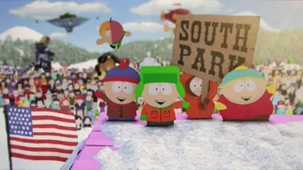

The genetics
Genetic engineering is the subject of this early South Park episode, broadcast in Spain as "Ingeniería genética". It mixes the main public worries of the late 1990s: crossing species, creating grotesque animals and cloning a human. Dr. Mephesto, modelled on Marlon Brando's Dr. Moreau in the 1996 film The Island of Dr. Moreau, is the mad scientist who builds absurd creatures for no clear purpose and clones a child from a stolen blood sample. A Baltimore Sun reviewer read the episode as a parody of genetic engineering and a statement on its possible evils, notably through the monstrous clone of Stan. Its scientific jokes are partly accurate: an elephant and a pig cannot interbreed or simply have their DNA "spliced", and a clone would be born as a baby, not appear as a fully grown giant.
How genetics is portrayed
- Overall portrayal of genetics
- negative The episode parodies genetic engineering and, through Mephesto's grotesque creatures and the monstrous clone, makes a statement about its potential evils.
- Outcome of the genetic intervention
- negative The clone of Stan is a giant mutant that rampages through town, wrecks Stan's house and indirectly kills Kenny before being shot.
- Dr. Alphonse Mephesto
- villain Aim: curiosity (neutral). Modelled on Dr. Moreau, Mephesto makes animals with multiple buttocks for no stated purpose and secretly takes Stan's blood to clone him; he is staged as a creepy parody mad scientist, though he finally shoots the clone and apologises.
- Terrance Mephesto
- villain Aim: personal (neutral). To win his bet with Kyle, Terrance produces a clone of Stan from the stolen blood and ignores the danger it poses; he is the boys' bullying rival.
- Kyle Broflovski
- hero Aim: personal (neutral). Kyle wants to cross his elephant with Cartman's pig to get a small pet for a science fair, and turns to natural breeding when splicing is impossible; he is the episode's protagonist and wins the prize.
The story
Kyle's mother will not let him keep his new pet elephant in the house, so after a class on genetic engineering he decides to cross it with Cartman's pot-bellied pig to create a small "pot-bellied elephant". His rival Terrance bets that he can clone a whole person first. The boys visit Dr. Alphonse Mephesto at the South Park Genetic Engineering Ranch, home to animals with four pairs of buttocks, who tells them that pig and elephant DNA "just won't splice" and secretly takes a blood sample from Stan. Chef suggests they let the animals breed naturally instead. Meanwhile, Mephesto creates a giant clone of Stan that escapes and rampages through town, until Mephesto shoots it. At the science fair, Terrance presents a monkey with five pairs of buttocks, but Kyle's pig gives birth to a piglet that looks like Mr. Garrison, and Garrison awards it first prize.